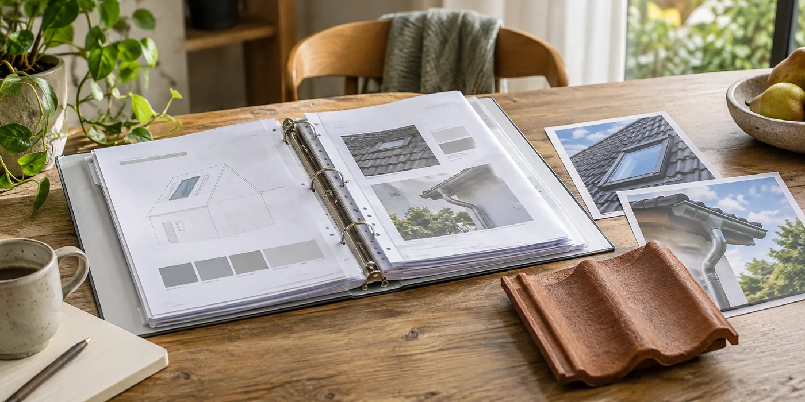

Vraag wat er werkelijk gebouwd is
Bewaar de definitieve werkomschrijving en leg afwijkingen van de offerte vast. Noteer welke materialen en isolatie zijn gebruikt en waar bestaande lagen behouden bleven. Vraag om foto’s van details die nu verborgen zijn. Een eindfactuur met alleen een totaalbedrag geeft minder bruikbare informatie dan een dossier dat de uitgevoerde opbouw beschrijft.
Koppel onderhoud aan concrete onderdelen
Vraag welke controles nodig zijn voor goten, dakramen en een eventueel plat dak. Laat vastleggen wie je daarvoor kunt contacteren. Bewaar onderhoudsafspraken en productdocumenten samen, zodat een toekomstige vakman niet alles opnieuw moet reconstrueren. Noteer ook welke delen niet bij de renovatie hoorden.

Maak garanties terugvindbaar
Vraag onderscheid tussen productdocumenten, afspraken over uitvoering en eventuele onderhoudsvoorwaarden. Bewaar de communicatie over opmerkingen bij oplevering en hoe ze opgelost worden. Een goed dossier is geen vervanging voor een inspectie, maar helpt wel om een gerichte vraag te stellen wanneer later iets verandert aan het dak.
Benoem ook de nog open punten
Een oplevering kan opmerkingen bevatten die later worden opgelost. Zet die afzonderlijk op een lijst met afgesproken vervolgstap en contactpersoon. Bewaar een bevestiging wanneer ze afgehandeld zijn. Maak ook duidelijk welke oudere delen niet vernieuwd werden. Dat voorkomt dat je een toekomstig onderhoudsprobleem automatisch aan de recente werken koppelt. Het dossier hoort zowel de nieuwe opbouw als de grens van de opdracht te beschrijven, zodat een volgende specialist niet hoeft te raden.
Een praktisch voorbeeld
Twee jaar later wil je zonnepanelen plaatsen. Met foto’s van de vernieuwde opbouw en de materiaalgegevens kan de installateur zijn inspectie voorbereiden. Hij moet de geschiktheid nog steeds zelf beoordelen.
Illustratief scenario, geen klantcase.
Neem dit mee naar je gesprek
- Definitieve werkomschrijving
- Materiaal- en isolatiegegevens
- Foto’s van verborgen aansluitingen
- Onderhoud en garantiecontacten
Veelgestelde vraag
Volstaat de factuur als renovatiedossier?
Bewaar ook materiaalgegevens, afspraken en relevante foto’s. De factuur alleen beschrijft vaak niet alle details.
Bron en achtergrond
Buildwise: officiële of technische achtergrond bij dit onderwerp ↗
Geraadpleegd op 13 oktober 2026. De praktische checklist en het voorbeeld zijn redactionele uitwerkingen. Fabrikantinformatie geldt voor de beschreven producten; ze is geen algemene garantie voor andere systemen.
Wat betekent dit voor jouw woning?
Gebruik de calculator voor een eerste indicatie. Een vakman beoordeelt jouw situatie en bevestigt de uitvoering en definitieve prijs.
Bekijk de dakwerkencalculator →